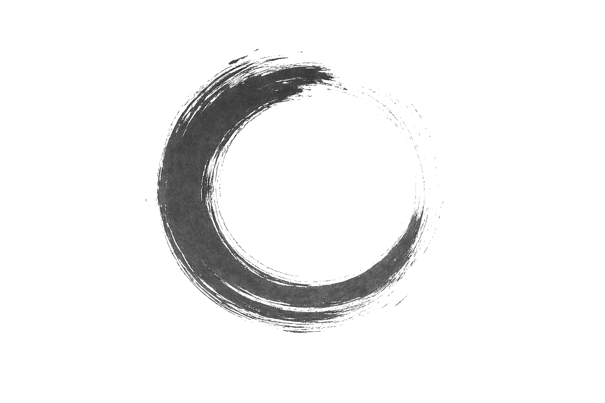

像がほどける場所
Where Images Come Undone
詩 · 小説 · 写真 · 漆芸
Poetry · Fiction · Photography · Urushi
境界に指を置く。 詩で、小説で、写真で、漆で。 触れたものの輪郭がほどける、その遅さのなかに言葉を置く。
I work at the threshold—through poetry, fiction, photography, and urushi—placing words in the slow undoing of contours.
展示・出版・その他のご依頼はこちらから。
For exhibitions, publications, and other inquiries.